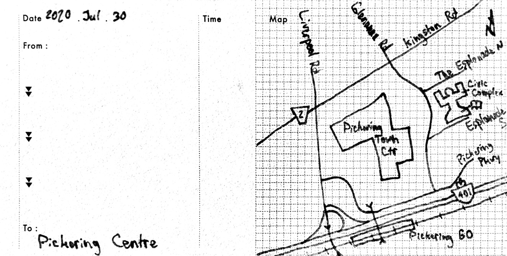

| Home | ↓ MTT | Co-Op Portfolio | Résumé | Links | ↓ Downloads |
| DTT | Signage |
Surprisingly not bad, considering it doesn’t exist. 
Pickering cannot be fairly compared on this list because it technically doesn’t have a downtown (although they are working on it!). However, it feels weird to leave out the largest city in Durham, so here we are. This is Pickering City Centre (not downtown).
Pickering City Centre (as it stands today) includes a park, a library and civic centre, a shopping mall,1 a highway, and a GO station. The park is very nice. I like it! It has many trees and a promenade so you can get a nice stroll in, and something that’s been very rare: art. There is art everywhere. Some of it’s interactive! Now, is it all good? Does it all make sense? Maybe. But if everyone likes it, then it isn’t art worth having, in my opinion.
The civic complex and library is also well-done. It’s architecturally modern while still harkening back to the grand old city halls (like in American capitals) without looking terrible. I like the interest of the supports holding up the clock tower (and the fact there’s an actual clock tower) and the surprisingly tasteful red brick and teal scheme.
Pickering Town Centre is the fancy mall in Durham. For a Toronto audience, Pickering Town Centre not as upscale as, say, Yorkdale, but I would put it at around an Eaton Centre (but with less decorations, art, and people). It is fancier than the Oshawa Centre (the “common”, “popular”, or “normal” mall around here), although I think they’re working to change that.
The mall is clean, bright, white with dark wood accents, and has nice grecian columns. There’s not really much to say, although I like the signage and hand sanitizer that they have out for the pandemic (although most people ignore the signage, it was not busy enough to cause an issue). The mall is generally inoffensive and I like it. The food court is cozy, and nice to sit in.
The GO bridge is very nice. It provides a convenient link between the mall and the GO station, and the bus terminals on either side of the 401. In the night, it lights up pretty like a glowing slug across the highway. Doing the day, the same shrouds provide shade so the bridge does not get too hot. The entire bridge is full of a slightly blue-tinged sunlight, and provides excellent views of the 401 and the rail lines. The end bridges leading to the parking garages are nice, too, with just a little bit of slanted windows to provide some visual interest. It really feels like a sidewalk in the sky!
Pickering’s proto-downtown is actually fairly nice, and I would recommend checking out the park. The mall is nearby if you need an air-conditioned break or a bite to eat, and all of this is easily accessible from the GO station. The entire area is accessible with elevators and curb cuts. I look forward to seeing what this will become.
The fancy one. ↩